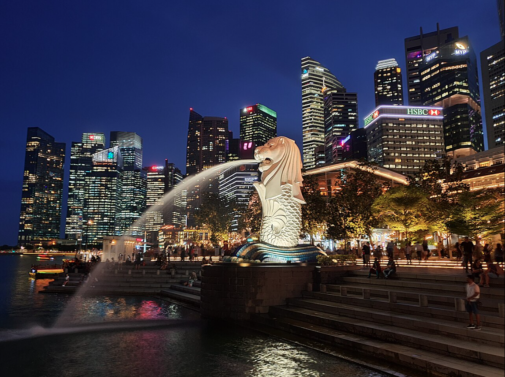
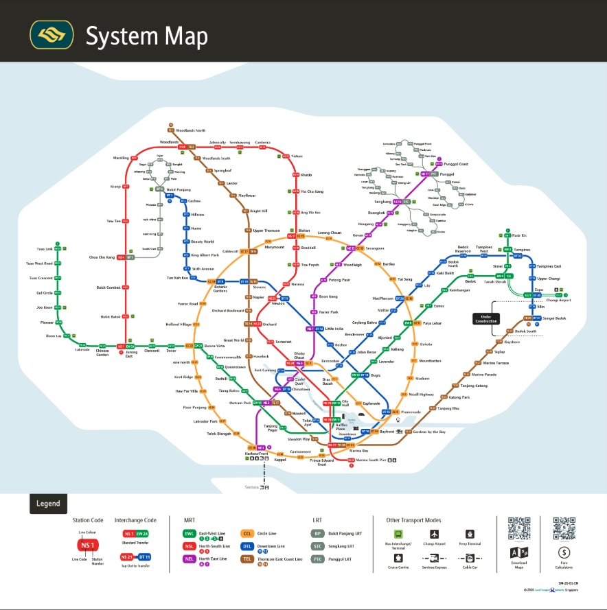
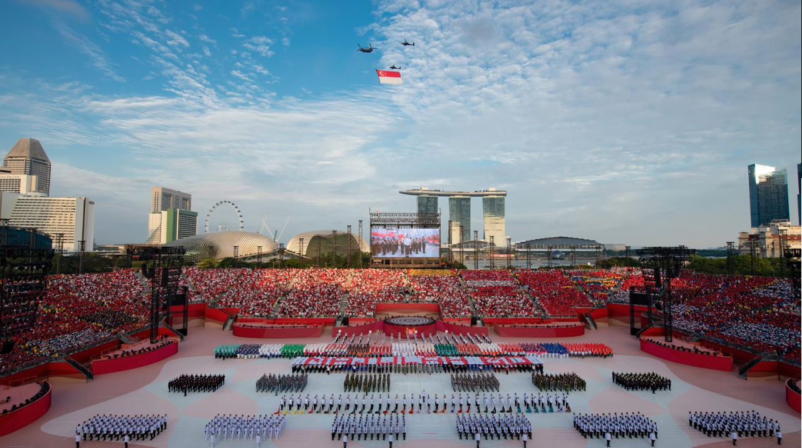
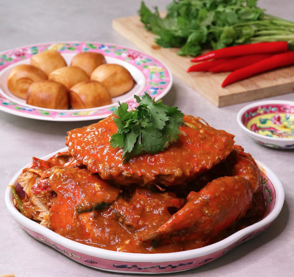
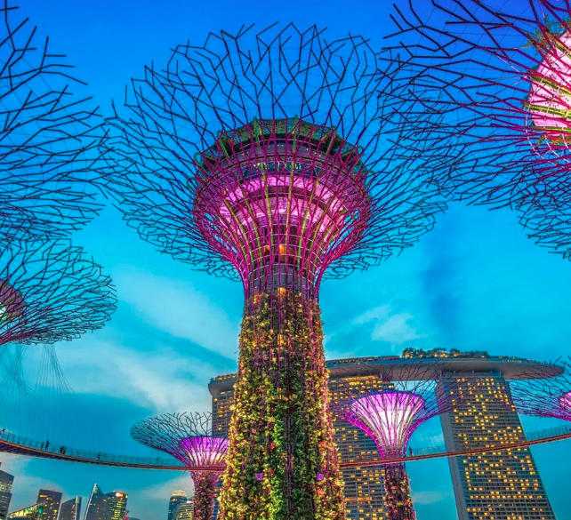

The Merlion is Singapore's official mascot, featuring a mythical creature with the head of a lion and the body of a fish. The Singapore Merlion was designed in 1964 and the iconic physical statue was built on September 15, 1972. Being very symbolic to Singaporeans, it is widely used to represent both the city and its people in sports teams, advertising, branding, tourism and as a sign of national pride.

Singapore's Mass Rapid Transit (MRT) system connects the entire island through over 170 stations spread across six main lines. The East-West line, the North-South line, The North East line, The Circle Line, The Downtown Line and the Thomson-East Coast Line. Planning for Singapore's Mass Rapid Transit (MRT) system began in the late 1960s. Construction officially started in October 1983, and the first MRT line (the North-South Line) opened on November 7, 1987.

Singapore's National Day Parade (NDP) takes place annually on August 9th to commemorate the nation's independence. First held in 1966, the massive civic and military event rotates between iconic locations like the Padang and the National Stadium, featuring grand digital shows, flypasts, and cultural performances.

Singapore food is a rich mix of Chinese, Malay, Indian, and Peranakan cultures. Ever since Singapore was established as a British port in 1819, Singaporean cuisine has been influenced by different cultures due to its position as an international shipping port. Nowadays, famous dishes include Hainanese Chicken Rice, spicy Laksa, Chili Crab, and Bak Kut Teh (Pork ribs soup). These foods can be found in hawker centres all over Singapore or fancy restraunts that can be found in Singapore's various shopping centers. No matter what, you're not far from the vicinity of one of these tasty dishes.

Gardens by the Bay is a massive, award-winning nature park located at 18 Marina Gardens Drive right by the Marina Bay Sands. It spans 101 hectares and it features iconic futuristic architecture, cooled conservatories as well as towering vertical gardens. It even has the largest glass greenhouse in the world holding a Guinness world record. It features nine different gardens showcasing plants from Mediterranean and subtropical regions.